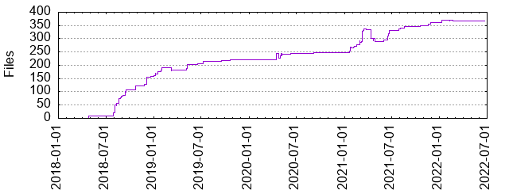

Files
- Total files
- 368
- Total lines
- 21351
- Average file size
- 2212.21 bytes

| Extension | Files (%) | Lines (%) | Lines/file |
|---|
| 24 (6.52%) | 661 (3.10%) | 27 |
| bazel | 101 (27.45%) | 3753 (17.58%) | 37 |
| bzl | 75 (20.38%) | 12890 (60.37%) | 171 |
| c | 15 (4.08%) | 85 (0.40%) | 5 |
| cc | 4 (1.09%) | 99 (0.46%) | 24 |
| cpp | 25 (6.79%) | 583 (2.73%) | 23 |
| h | 19 (5.16%) | 128 (0.60%) | 6 |
| in | 2 (0.54%) | 22 (0.10%) | 11 |
| java | 1 (0.27%) | 28 (0.13%) | 28 |
| md | 15 (4.08%) | 814 (3.81%) | 54 |
| ninja | 1 (0.27%) | 44 (0.21%) | 44 |
| patch | 12 (3.26%) | 355 (1.66%) | 29 |
| png | 11 (2.99%) | 297 (1.39%) | 27 |
| py | 3 (0.82%) | 502 (2.35%) | 167 |
| sh | 10 (2.72%) | 126 (0.59%) | 12 |
| toml | 2 (0.54%) | 10 (0.05%) | 5 |
| txt | 33 (8.97%) | 522 (2.44%) | 15 |
| vm | 1 (0.27%) | 3 (0.01%) | 3 |
| xml | 10 (2.72%) | 281 (1.32%) | 28 |
| yaml | 4 (1.09%) | 371 (1.74%) | 92 |